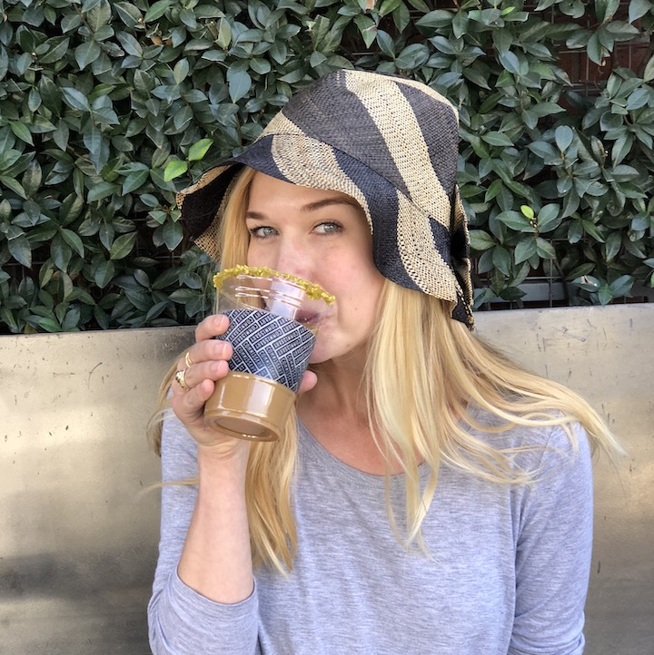

Allison McElroy
DreamerDesignerDoer
I grew up regularly relocating with my family to various cities mainly within Texas and Oklahoma. The familiarity to transition is what began to shape my character- eventually instilling within me a desire for great adventure and even greater design. Several years ago my big adventure to Master Architecture lead me to finally put down roots in Southern California.
Portfolio (opens in a new tab) LinkedIn (opens in a new tab)
